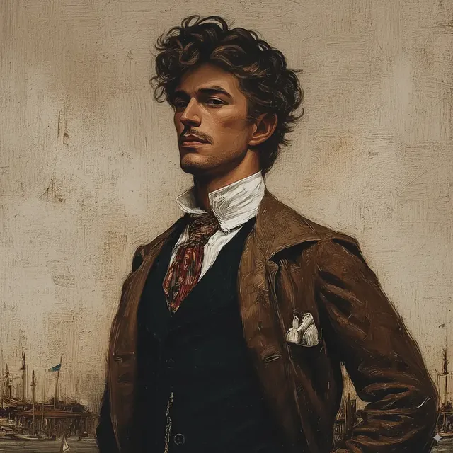

Frederick Calvert
Frederick Calvert is a distinguished host of Thymbra Farm, set to the north of Constantinople. He has a hand of consequence in the local excavation of an ancient Greek site, and works often alongside such men as Heinrich Schliemann and his own brother, Frank Calvert. Married to Evelyn Calvert, he is a man of courteous manner and a fondness for talk of politics and of trade, most of all at the elegant yet unbuttoned dinners he gives at the farmhouse.
At these gatherings he moves among a mixed company — Osman Hamdi Bey, General Patrice de MacMahon, and a German couple, Heinrich and Sophia — and the conversation turns most often upon the dig, the more so since a recent festival thinned the ranks of the labourers. His interest in the finds is evident as he guides the talk and lends his own observations, keeping chiefly to French, with a word of Turkish or of English as occasion asks.
He is deeply taken up, besides, with the matter of a great crack that has opened near the farmhouse, and speaks in it with the authority of his calling. He showed both trust and leadership in granting Osman Hamdi Bey leave to take a party of the younger sort to see to urgent business at the excavation; his oversight was no small thing, bent as he was upon smoothing the company's way and shaping their choices touching the exploration of ancient Troy and the carrying of artifacts out of the Ottoman Empire. His is a weighty presence, a courteous bridge between the fine detail of the digging and the broader import of what is uncovered.